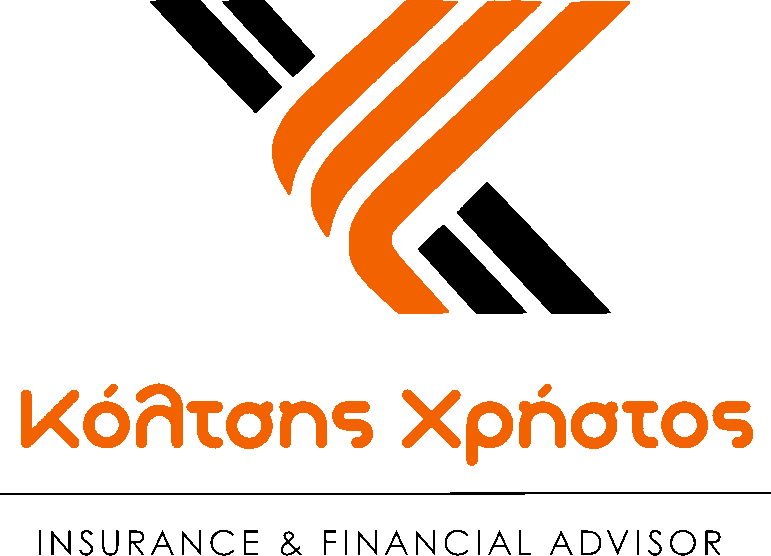

01
Προστασία
επιχείρησης
Αστική ευθύνη, περιουσία, εξοπλισμός, στόλος και κυβερνοκίνδυνοι. Στόχος είναι ένα απρόβλεπτο περιστατικό να μη μετατραπεί σε πρόβλημα ρευστότητας ή λειτουργίας.
2026
Προστασία της επιχείρησης, των ανθρώπων της και της συνέχειάς της.

Χρήστος Κόλτσης
Insurance & Financial Advisor
Ενημερωτικό έντυπο επιχειρηματικού σχεδιασμού
Η ΠΡΟΣΕΓΓΙΣΗ
Κάθε επιχείρηση έχει διαφορετικές ταμειακές ροές, ανθρώπους-κλειδιά, υποχρεώσεις, συνεργασίες και σχέδια ανάπτυξης. Πρώτα χαρτογραφούμε τι μπορεί να προκαλέσει οικονομική ζημιά ή να διακόψει τη λειτουργία. Μετά επιλέγουμε τις λύσεις που έχουν πραγματική χρησιμότητα.
01
Αστική ευθύνη, περιουσία, εξοπλισμός, στόλος και κυβερνοκίνδυνοι. Στόχος είναι ένα απρόβλεπτο περιστατικό να μη μετατραπεί σε πρόβλημα ρευστότητας ή λειτουργίας.
02
Υγεία, ζωή, ατύχημα και παροχές εργαζομένων. Ο σχεδιασμός μπορεί να ενισχύσει την προστασία, τη διακράτηση προσωπικού και την εικόνα του εργοδότη.
03
Key Person, συνέταιροι, επιχειρηματικό χρέος, διαδοχή και μακροπρόθεσμη δημιουργία κεφαλαίου. Στόχος είναι η επιχείρηση να έχει επιλογές όταν προκύψει το δύσκολο σενάριο.
Η συζήτηση δεν είναι «ποιο πρόγραμμα θέλετε;». Είναι «τι δεν θέλετε να θέσει σε κίνδυνο την επιχείρησή σας;»
ΠΡΟΣΤΑΣΙΑ ΛΕΙΤΟΥΡΓΙΑΣ
Η βάση ενός σωστού σχεδιασμού είναι να προστατεύσουμε πρώτα τα σημεία που μπορούν να δημιουργήσουν άμεση οικονομική απώλεια ή διακοπή εργασιών.
01
ΤΡΙΤΟΙ & ΕΥΘΥΝΕΣ
Αξιώσεις τρίτων από σωματική βλάβη, υλική ζημιά ή άλλη ευθύνη που συνδέεται με τη δραστηριότητα της επιχείρησης. Το εύρος κάλυψης εξαρτάται από τον κλάδο και τους όρους του συμβολαίου.
ΠΕΡΙΟΥΣΙΑ & ΕΞΟΠΛΙΣΜΟΣ
Κτίρια, εξοπλισμός, μηχανήματα, εμπορεύματα και άλλα περιουσιακά στοιχεία μπορούν να προστατευθούν απέναντι σε συγκεκριμένους ασφαλιζόμενους κινδύνους, με κεφάλαια που ανταποκρίνονται στην πραγματική αξία και χρήση τους.
CYBER RISK
Η ψηφιακή λειτουργία δημιουργεί κινδύνους από παραβίαση δεδομένων, κυβερνοεπίθεση, απώλεια συστημάτων και διακοπή εργασιών. Η κατάλληλη κάλυψη σχεδιάζεται σύμφωνα με το πραγματικό ψηφιακό αποτύπωμα της εταιρείας.
ΑΝΘΡΩΠΟΙ & EMPLOYEE BENEFITS
Όταν ο σχεδιασμός είναι σωστός, μια εταιρική παροχή δεν είναι απλώς «ένα ακόμα benefit». Μπορεί να υποστηρίξει την ασφάλεια των εργαζομένων, τη διακράτηση στελεχών και την ανταγωνιστικότητα της επιχείρησης ως εργοδότη.
02
Η αξία μιας παροχής φαίνεται όταν ο εργαζόμενος καταλαβαίνει τι του προσφέρει – και η επιχείρηση ξέρει γιατί την προσφέρει.
ΥΓΕΙΑ
Πρόσβαση σε ιδιωτικές υπηρεσίες υγείας και συμπληρωματικές παροχές, σύμφωνα με τη δομή και τα όρια του προγράμματος.
ΠΡΟΣΤΑΣΙΑ
Οικονομική προστασία εργαζομένου και οικογένειας σε σοβαρά απρόοπτα, ανάλογα με τις επιλεγμένες καλύψεις.
HR STRATEGY
Στοχευμένες παροχές μπορούν να συνδεθούν με τη διακράτηση και την επιβράβευση εργαζομένων ή στελεχών.
LONG-TERM
Εταιρικά χρηματοδοτούμενος σχεδιασμός μπορεί να υποστηρίξει μελλοντική παροχή ή κεφάλαιο, με βάση το ισχύον θεσμικό και φορολογικό πλαίσιο.
KEY PERSON
Ο «Key Person» μπορεί να είναι ο ιδιοκτήτης, ένας βασικός πωλητής, τεχνικός, διαχειριστής ή στέλεχος που δεν αντικαθίσταται εύκολα. Η απώλεια ή μακρά απουσία του μπορεί να δημιουργήσει πραγματικό επιχειρηματικό κενό.
03
Ανάλογα με τον σχεδιασμό, μπορεί να δημιουργηθεί κεφάλαιο για τη μεταβατική περίοδο, ώστε η επιχείρηση να έχει χρόνο και επιλογές αντί να αναγκαστεί να αντιδράσει υπό πίεση.
ΣΥΝΕΤΑΙΡΟΙ & ΔΙΑΔΟΧΗ
Χωρίς προετοιμασία, η συμμετοχή ενός συνεταίρου μπορεί να περάσει στους κληρονόμους ενώ οι υπόλοιποι εταίροι χρειάζονται κεφάλαιο για εξαγορά. Ο σωστός σχεδιασμός συνδέει τη συμφωνία των μερών με τη χρηματοδότηση του σεναρίου.
04
Τι προβλέπεται σε θάνατο, ανικανότητα ή αποχώρηση;
Πώς καθορίζεται η αξία του μεριδίου;
Πώς θα βρεθεί το κεφάλαιο όταν χρειαστεί;
Πώς προστατεύονται εταιρεία, εταίροι και κληρονόμοι;
Το ασφαλιστικό κεφάλαιο δεν ταυτίζεται αυτόματα με την αξία της εταιρικής συμμετοχής. Η βάση πρέπει να προκύπτει από συμφωνία, καταστατικό και/ή αποτίμηση και να επανεξετάζεται καθώς αλλάζει η επιχείρηση.
ΧΡΕΟΣ & ΡΕΥΣΤΟΤΗΤΑ
Δάνεια, εγγυήσεις, μισθώσεις, μισθοδοσία και λειτουργικά έξοδα δεν σταματούν αυτόματα σε ένα σοβαρό γεγονός. Για αυτό ο επιχειρηματικός σχεδιασμός εξετάζει ποια υποχρέωση χρειάζεται κεφάλαιο και για πόσο χρόνο.
05
Ποιο υπόλοιπο θα πρέπει να μπορεί να εξυπηρετηθεί ή να μειωθεί;
Πόσους μήνες λειτουργίας θέλουμε να μπορούν να χρηματοδοτηθούν;
Πού συνδέεται η προσωπική περιουσία με εταιρική υποχρέωση;
Τι κεφάλαιο απαιτείται μέχρι να σταθεροποιηθεί η επιχείρηση;
ΔΗΜΙΟΥΡΓΙΑ ΚΕΦΑΛΑΙΟΥ & ΦΟΡΟΛΟΓΙΚΟ ΠΛΑΙΣΙΟ
Ομαδικά ασφαλιστικά προϊόντα επαγγελματικής συνταξιοδότησης μπορούν να χρησιμοποιηθούν στο πλαίσιο αμοιβών και παροχών για μακροπρόθεσμη συσσώρευση κεφαλαίου. Ο σχεδιασμός πρέπει να συνδέεται με τον πραγματικό ρόλο του ασφαλισμένου στην επιχείρηση και με το ισχύον φορολογικό πλαίσιο.
06
2026
έως 20%
Για μισθωτούς και όσους αποκτούν εισόδημα από μισθωτή εργασία, επί της βάσης που ορίζει το άρθρο 105 ν. 5078/2023. Για μη μισθωτούς προβλέπεται ανώτατο ποσό 20.000 € (με την προβλεπόμενη αναπροσαρμογή).
ΑΠΟ 1/1/2027
έως 35%
Το άρθρο 96 ν. 5327/2026 αυξάνει τα όρια σε 35% και 35.000 € αντίστοιχα, για φορολογικά έτη που αρχίζουν από 1/1/2027. Προβλέπονται ειδικοί κανόνες για ορισμένες περιπτώσεις.
Η φορολογική εφαρμογή επιβεβαιώνεται σε συνεργασία με λογιστή/φοροτεχνικό. Το παρόν αποτελεί ενημέρωση και όχι φορολογική ή νομική γνωμοδότηση.
Ο ΤΡΟΠΟΣ ΣΥΝΕΡΓΑΣΙΑΣ
Ο σχεδιασμός έχει αξία όταν είναι κατανοητός, μετρήσιμος και μπορεί να επανεξετάζεται καθώς αλλάζει η επιχείρηση.
Κλάδος, δραστηριότητα, προσωπικό, συνεργάτες, περιουσία, υποχρεώσεις και υπάρχουσες καλύψεις.
Ποιο γεγονός μπορεί να προκαλέσει τη μεγαλύτερη οικονομική πίεση ή διακοπή λειτουργίας;
Τι πρέπει να καλυφθεί πρώτο, ποιο κεφάλαιο χρειάζεται και ποιο budget είναι λογικό;
Επιλογή λύσεων, εφαρμογή και επανέλεγχος όταν αλλάζει η εταιρεία ή το θεσμικό πλαίσιο.
Δεν ξεκινάμε από το τι μπορεί να πουληθεί.
Ξεκινάμε από το τι χρειάζεται να προστατευτεί.
Ενημερωτικό υλικό • Οκτώβριος 2026